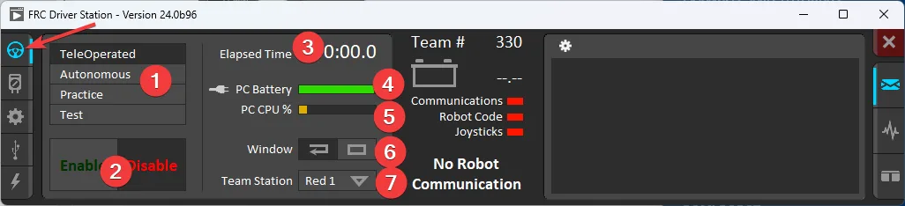

Basics for Using the Robot
First, turn on the robot and wait for the wifi to turn on. Connect to the radio using wifi on your laptop.
When you have the project opened in WPILIB you can build and deploy the code onto the robot.
Make sure you're connected to the robot before you deploy!!!
Press the three dots in the top right corner then press "Build Robot Code", wait for it to finish, and press "Deploy Robot Code".

Using the Driver Station
Make sure you have the Driver Station open. (Saying this from people forgetting this step)

1. Robot Mode - This section controls the Robot Mode.
Teleoperated Mode causes the robot to run the code in the Teleoperated portion of the match.
Autonomous Mode causes the robot to run the code in the Autonomous portion of the match.
Practice Mode causes the robot to cycle through the same transitions as an FRC match after the Enable button is pressed (timing for practice mode can be found on the setup tab). When Practice Mode is in use, the DS will flash the background orange to indicate a pending enable (either the start of Autonomous or the start of Teleop after an A-Stop).
Test Mode is an additional mode where test code that doesn’t run in a regular match can be tested.